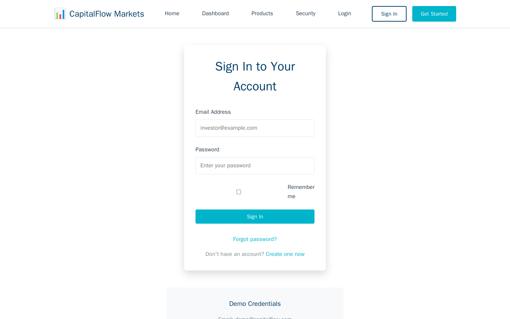

Exercise CF1.1: Basic Web Enumeration
Before You Begin
You should have read the Chapter 1 Introduction, which explains the CapitalFlow Markets scenario and the progression through both reconnaissance exercises. Your VPN must be connected and your terminal open before continuing. No prior web exploitation experience is required; every step is explained in full.
Scenario
CapitalFlow Markets is a fintech startup preparing to launch a public trading platform. Sarah Chen (CTO) has retained your firm, Blackridge Security, to perform a pre-launch security assessment. The first phase focuses entirely on reconnaissance: mapping the web application's pages, forms, inputs, and any information leaked through HTML source code, comments, or configuration files.
Sarah provided the following brief: "We pushed the trading platform to our staging environment last week. The development team says everything is production-ready, but I want an independent review of what the site exposes before we open registration. Focus on what an unauthenticated visitor can discover."
Target: capitalflow.lab (port 80)
No credentials are provided for this exercise. You are assessing the application as an unauthenticated visitor.
Your Objectives
- Browse every accessible page on the CapitalFlow Markets website
- Examine HTML source code for hidden comments, hardcoded values, and developer notes
- Identify all forms and input fields, recording their field names and submission endpoints
- Check HTTP response headers for information leakage
- Discover hidden or unlisted directories using automated enumeration
- Find and submit the flag in
OCR{...}format
Background: Web Application Reconnaissance
Why Source Code Matters
Every web page a browser renders is built from HTML (Hypertext Markup Language), CSS (Cascading Style Sheets), and JavaScript files delivered by the server. The browser interprets these files to display the visual page, but the raw source code often contains more than what appears on screen. Developers leave comments in the HTML to communicate with teammates, embed version strings for debugging, include references to internal API endpoints, and sometimes hardcode credentials or tokens during development. Viewing the page source reveals all of this information.
Forms and Input Fields
HTML forms collect user input and submit it to the server. Each form contains <input> elements with name attributes that define the parameter names sent in the HTTP request. Knowing the exact field names and the form's action URL (where data is submitted) is essential for later testing phases. A login form with fields named email and password submitting to /api/auth/login tells an attacker exactly where to send brute-force attempts.
robots.txt and Directory Enumeration
The robots.txt file instructs search engine crawlers which paths to avoid indexing. Security testers read this file because it often lists directories the organization considers sensitive. Directory enumeration tools like gobuster take this further by testing thousands of common path names against the server and reporting which ones return valid responses.
graph TD
A["Browse homepage<br/>and visible pages"] --> B["View HTML source<br/>for comments/tokens"]
A --> C["Check robots.txt<br/>for hidden paths"]
A --> D["Inspect HTTP headers<br/>for server info"]
B --> E["Record forms,<br/>inputs, endpoints"]
C --> F["Run gobuster<br/>for directory scan"]
D --> E
F --> E
E --> G["Complete attack<br/>surface map"]
style A fill:#4a90d9,color:#fff
style B fill:#4a90d9,color:#fff
style C fill:#4a90d9,color:#fff
style D fill:#4a90d9,color:#fff
style E fill:#e8a735,color:#fff
style F fill:#e8a735,color:#fff
style G fill:#6aaa64,color:#fffThe diagram above shows the reconnaissance workflow. Manual browsing, source inspection, and header analysis happen in parallel, all feeding into a comprehensive map of the application's attack surface.
Tool Primer: curl and gobuster
curl for Web Requests
curl is a command-line tool for sending HTTP requests and viewing raw responses. Penetration testers use curl because it shows the exact HTML, headers, and status codes without browser rendering getting in the way.
Basic GET request:
View response headers only:
Verbose mode (request and response headers):
| Flag | Purpose |
|---|---|
-s |
Silent mode; hides the progress bar |
-I |
Fetch headers only (HEAD request) |
-v |
Verbose; show full request and response headers |
-L |
Follow redirects automatically |
-o /dev/null |
Discard response body |
gobuster for Directory Enumeration
Gobuster sends HTTP requests for each entry in a wordlist and reports which paths return valid responses.
| Flag | Purpose |
|---|---|
dir |
Directory brute-forcing mode |
-u |
Target URL |
-w |
Path to wordlist |
-t |
Number of threads (default 10) |
-x |
File extensions to test (e.g., -x html,txt,php) |
Walkthrough
Step 1: Launch the Exercise
Open the platform in your browser and start the exercise environment.
- Navigate to Exercises and locate the CapitalFlow Markets track
- Find Basic Web Enumeration and click Launch
- Wait for the status to change to Running
- Note the target IP displayed in the Active Lab View
Step 2: Browse the Homepage
Begin by visiting the CapitalFlow Markets homepage. Read the visible content and get a sense of what the application presents to visitors.
Read through the HTML output. Look for navigation links, page sections, and any references to other pages or endpoints. Note every URL you find in href attributes, as each one is a page worth visiting. Pay attention to links pointing to login pages, about pages, documentation, or API references.
Step 3: Examine the HTML Source for Comments and Hidden Content
Developers embed comments in HTML using <!-- --> tags. These comments are invisible in the browser but fully visible in the source code. Search the homepage source for any comments that contain credentials, internal notes, version strings, or references to hidden functionality.
Review each comment you find. Developer notes sometimes include TODO items referencing unfinished security features, hardcoded test credentials left from development, or internal endpoint paths. Record everything, even comments that seem harmless, because they may become relevant in later exercises.
Step 4: Visit All Linked Pages
Follow every link you discovered on the homepage. Each page may contain additional forms, comments, or information not present on the landing page.
For each page, read the HTML output and search for <form> elements, <input> fields, comments, and links to additional resources. Login and registration forms are especially important; record the form action URL, the HTTP method (GET or POST), and every name attribute on the input fields.
Step 5: Inspect Login Form Fields
The login page contains the form you will target in Chapter 2. Document its structure completely.
Kali - Extract form fields from the login page
Record the form action (e.g., /api/auth/login), the method (POST), and the input field names (e.g., email, password). Knowing these details is essential for crafting authentication attacks in later exercises.

Step 6: Check HTTP Response Headers
HTTP headers sent by the server can reveal the web server software, application framework, caching policies, and security configurations. Many servers include a Server header identifying the software and version.
Look for these headers in the response:
- Server: Identifies the web server (e.g., nginx, Apache)
- X-Powered-By: Reveals the backend framework (e.g., Express, PHP)
- X-Frame-Options: Indicates clickjacking protection
- Content-Security-Policy: Shows what resources the page can load
- Set-Cookie: Reveals session management details and cookie flags
Each header provides intelligence. A Server: nginx/1.24.0 header tells you the exact version, which you can cross-reference with CVE (Common Vulnerabilities and Exposures) databases. A missing X-Frame-Options header means the site may be vulnerable to clickjacking.
Step 7: Check robots.txt
The robots.txt file often reveals paths the organization wants to keep out of search engines. Retrieve and review it.
Look for Disallow entries listing directory paths. Each path listed is a directory worth visiting manually. Developers sometimes list admin panels, backup directories, or staging endpoints here, thinking that search engine exclusion equals access control.
Step 8: Enumerate Directories with gobuster
Manual browsing only finds pages that are linked from other pages. Directory enumeration tests thousands of common path names to find unlisted content.
Kali - Run gobuster with the common wordlist
Wait for the scan to complete. Review each result, paying attention to the HTTP status codes:
- 200: The path exists and returned content
- 301/302: The path exists and redirected (usually a valid directory)
- 403: The path exists but access is denied (worth noting for later)
- 404: The path does not exist
Visit any paths that returned 200 or 301/302 and examine their content. Hidden administrative panels, API documentation, or backup files may appear in the results.
Replace <discovered-path> with each interesting path from the gobuster output. Look for tokens, credentials, or references to internal systems.
Record Your Findings
Document everything you discovered during the reconnaissance phase.
Pages discovered:
URL Path Description Notable Content /Homepage /loginLogin page HTML comments found:
Form fields identified:
Form Location Action URL Method Field Names /loginHTTP headers of interest:
Header Value Server X-Powered-By robots.txt entries:
gobuster results:
Flag:
Analysis Questions
Consider each question carefully before reading the answer. These questions connect the reconnaissance techniques to real-world security implications.
1. Why should developers remove HTML comments before deploying a web application to production?
Reveal Answer
HTML comments are delivered to every visitor's browser as part of the page source. Any information embedded in comments, such as internal API paths, developer names, TODO notes about unfinished security features, or hardcoded credentials, becomes visible to anyone who views the source. Stripping comments during the build process (using tools like HTMLMinifier or a CI/CD pipeline step) eliminates this information leakage without affecting the user experience.
2. A gobuster scan returns a path with a 403 Forbidden status. Does a 403 response mean the path is inaccessible? What should a tester do next?
Reveal Answer
A 403 response confirms the path exists but the server is denying access with the current request. The path is not necessarily inaccessible. A tester should try different HTTP methods (POST, PUT, OPTIONS), add authentication headers, test for path traversal variations (adding trailing slashes, encoding characters), and check whether the restriction applies only to certain user agents. A 403 is often more interesting than a 404 because it confirms something worth protecting lives at that path.
3. The Server header reveals the exact version of the web server software. How would an attacker use that information, and what can the organization do to reduce the risk?
Reveal Answer
An attacker cross-references the server version against public vulnerability databases (CVE, NVD, Exploit-DB) to find known exploits for that exact version. For example, a specific nginx version might have a known buffer overflow or request smuggling vulnerability. The organization can configure the web server to suppress or generalize the Server header (e.g., returning just "nginx" instead of "nginx/1.24.0") and ensure the software is patched to the latest stable release. Hiding the version slows attackers but is not a substitute for patching.
Key Takeaways
- Manual browsing reveals the visible attack surface, but HTML source code, HTTP headers, and robots.txt expose information that never appears in the rendered page
- HTML comments left by developers during the build process can leak credentials, internal paths, version strings, and TODO notes about unfinished security controls
- HTTP response headers like
ServerandX-Powered-Byreveal the exact technology stack, enabling attackers to search for version-specific vulnerabilities - Directory enumeration with tools like gobuster discovers unlisted pages, admin panels, and backup files that manual browsing would miss entirely
- Form field documentation (action URLs, field names, HTTP methods) is the essential input for authentication attacks in Chapter 2